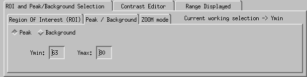
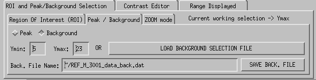

Visualize the Data Reduction Output
The selection of the Background and of the Peak Exclusion Regions are mandatory.
The Background selection will defined the region from where the average background willbe calculated and the Peak Exclusion region will be a region (inside the background region) that will not be taken into account in the calcuation of the background.
 Picture 1: Region Of Interest GUI
Picture 1: Region Of Interest GUI

Picture 1: Peak Exclusion GUI

Picture 1: Background Region
There are 4 ways to select the ROI and Background regions and 3 ways to select the Peak Exclusion region:
- Using the mouse (ROI, peak and background) Left click and without releasing the button move to the right location on the plot to set the first border of the background region. Release the left button to save the location. If you want to change this border, repeat the procedure. To switch to the other border, right click. The working border status switch from Ymin to Ymax. You can come back to the selection of Ymin by another right click. The current selection is defined by the status of the top option boxes. If Select Background is selected, you are working with the Background selection region. If the Select Peak is selected, you are working on the Peak Region. And at last, if the ZOOM mode is selected, you are working in just a preview mode that gives you a zoom of the plot (top right part of the GUI) of the position of the mouse over the ploting region.
- Using the keys u and d (ROI, peak and background) If you want to move one of the border of the selection, you can use the u key to move the selection up by 1 pixel, or the d key to move the selection down by 1 pixel.
- Using the text boxes (ROI, peak and background) Just enter a value in the text box of the selection you want to plot and press ENTER.
- Using the LOAD button (ROI and background) If a selection has been previously saved, just click the LOAD button, select the file you want to use and press OK. A preview of the file loaded is displayed in the right part of the GUI and the background selection is displayed.
It is possible to get an accurate selection by selecting the ZOOM tab in the top right corner of the GUI. This way, you will be able to select a region and see in the same time a zoom of the region surrounding the mouse cursor.
Using the SAVE button you can save the selection of the ROI and background regions you just made. You can modify the name and path of the file in the text box placed just below this button. A preview of the file you then just created is displayed in the right part of the GUI with the full name of the file.